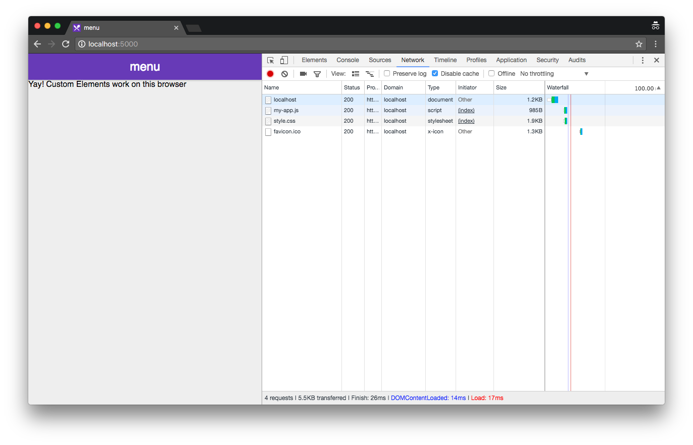
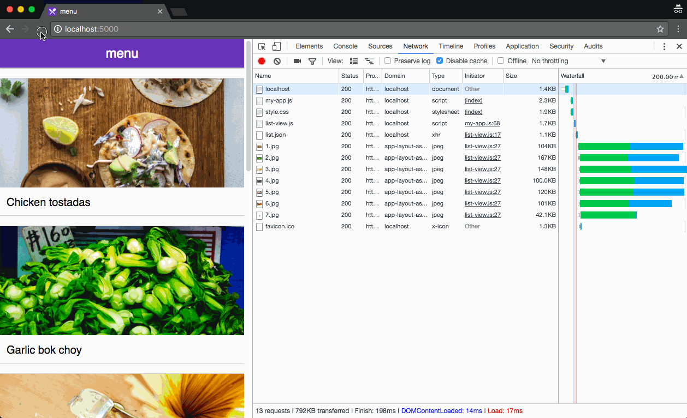
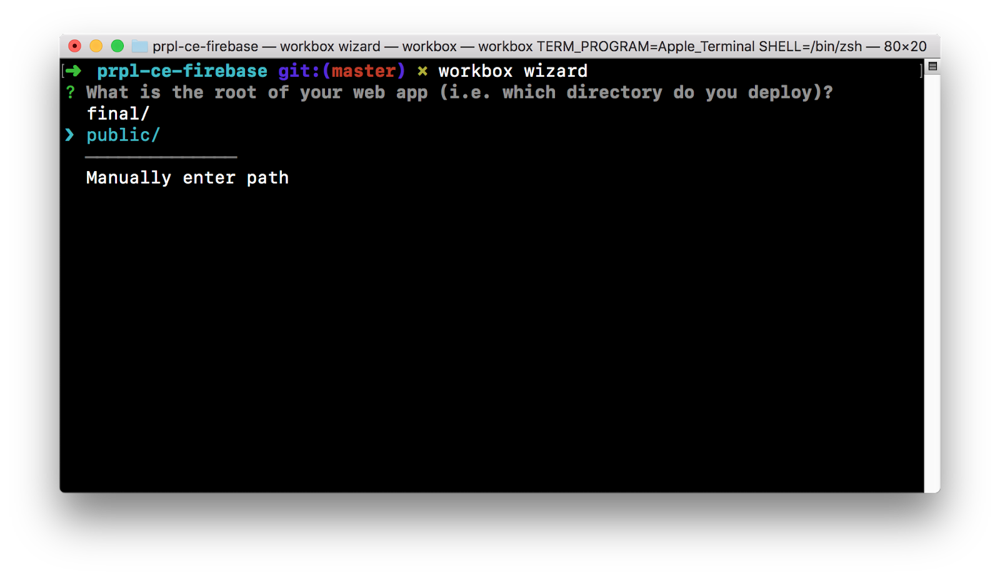
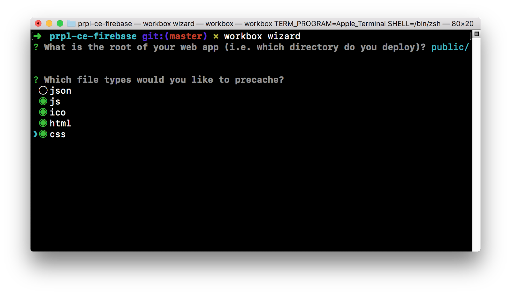
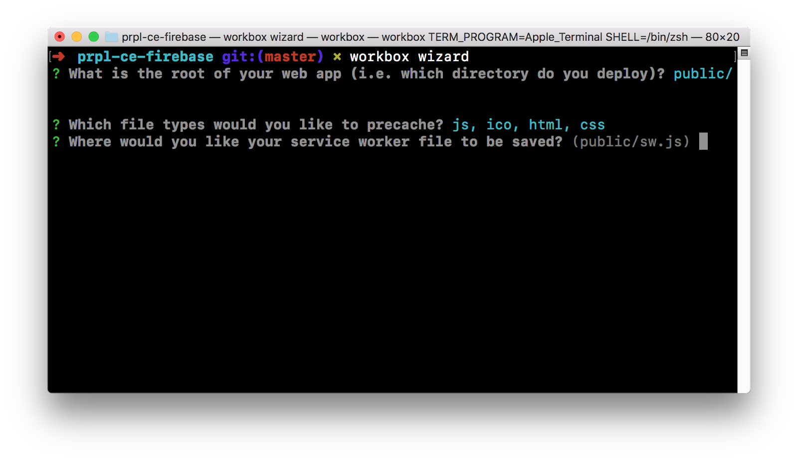
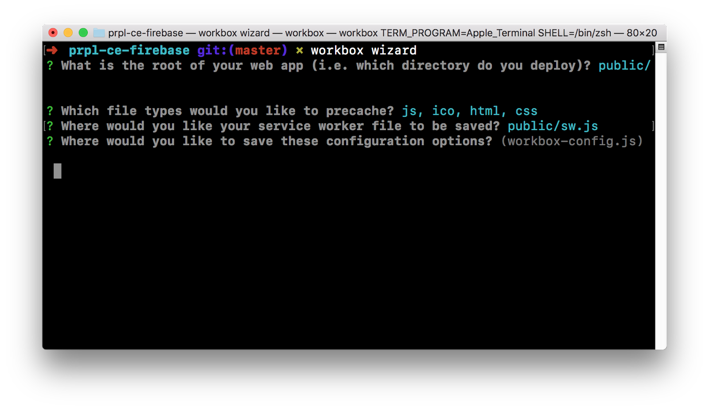
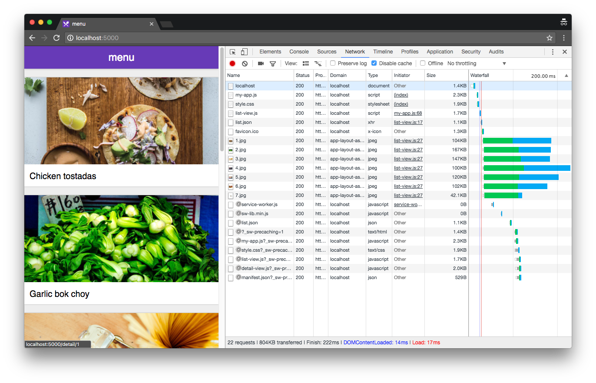
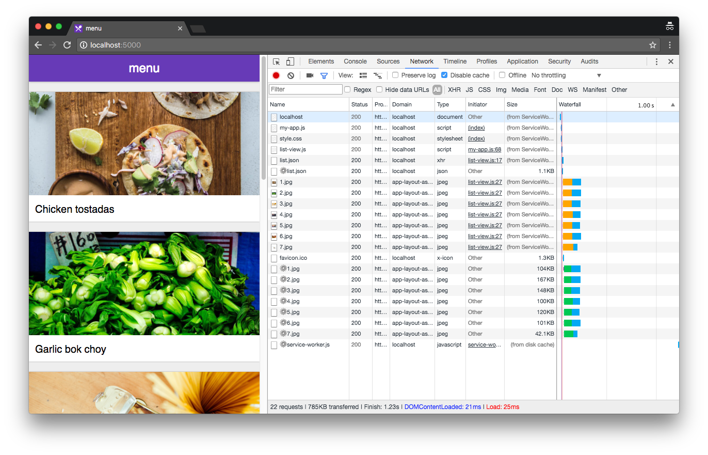
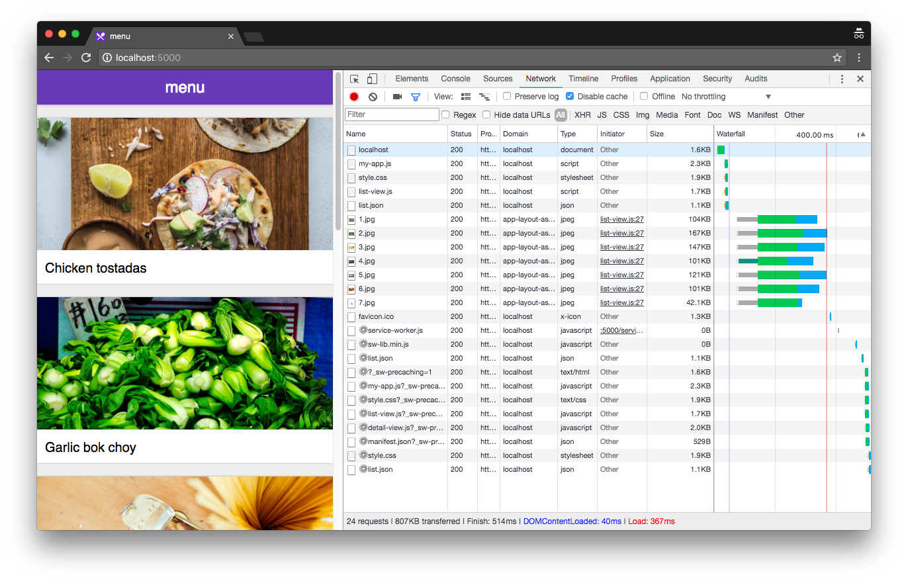
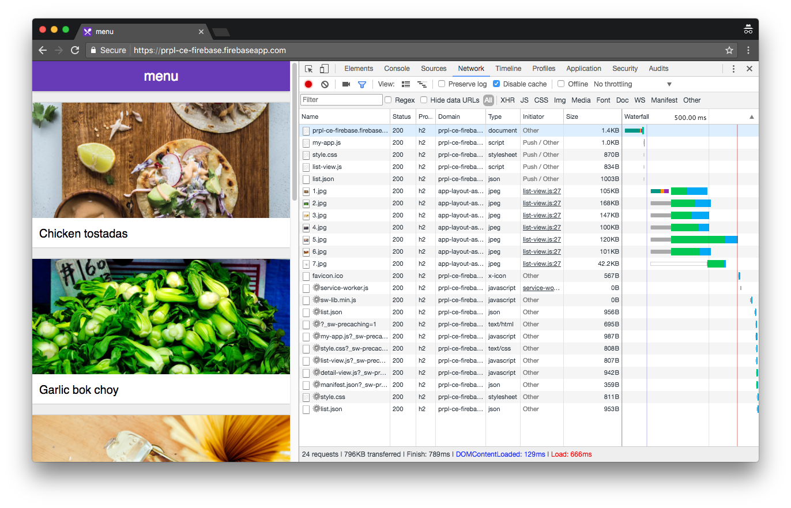

PRPL ek tareeka hai Progressive Web Apps bananay aur unko end-user k liye serve karnay ka. Is tareekay may bohat zyada zor application ki karkardagi (performance) aur application k shuru honay may jitna waqt lagta hai uspay hai.
PRPL ka matlab hai:
Ek aisi application jo PRPL k tareekon par banayi jaegi. Aik saadi si fehrist (list) aur har list-item ki tafseel ka page. Page kay liye hum Custom Elements istemaal karainge jinko hum lazy-load karenge jab zarurat ho. Aur hum Service Workers istemaal karenge apne code aur files ko cache karnay kay liye. Phir hum is application ko Firebase Hosting pe deploy kardenge ta kay hum Firebase ka HTTP/2 Sever Push istemal kar sakain.
Repository ko GitHub se clone karen:
git clone https://github.com/PolymerLabs/prpl-ce-firebase.git
Mutabaadal tor pe, nichay diye huay button ko click karke repository latest version ek zip ke tor pe download karen.
(cd) command ko istemaal kartey huey apni directory prpl-ce-firebase (or prpl-ce-firebase-master) jo download ki hai usmen ajayen. Final directory men is codelab ki mutawaqqa soorat mojud hai aur hawalay ke tor pe aap ko faraham ki gayi hai.
npm install -g firebase-tools workbox-cli
Firebase CLI ko istemaal karne ke liye, aapko ek Firebase account ki zarurat padegi. Apne Google account se Login karen aur Firebase console men ek naya mansuba (project) banayen, ab Firebase CLI se issi account men Login karen.
firebase login
Firebase CLI ko aap apna naya project istemaal karne ke liye tarteeb den, uske liye neechay di gayi command ka istemaal karen. Firebase aapko fori tor par ek project muntakhib karne ke liye aur ek alias shaamil karne ko kahega (jo ke koi bhi value hosakti hai, jese staging).
firebase use --add
Aagay di gayi command ko chala kar apni web app pe web server ka aaghaz karen. Phir, ek naya browser window kholen aur console main makhsoos kia hua URL load karen (Jese, http://localhost:5000/):
firebase serve

Custom elements k zariye hum apne banaye hue HTML tags kay bartao kay bary main bataty hain. Index.html main aap teen (3) custom elements dekh saktay hain:
<my-app> <list-view></list-view> <detail-view></detail-view> </my-app>
<my-app> top-level element hai, aur yeh hum istemaal karaingay <list-view> aur <detail-view> ko control karny k liye. Jo bhi element nazar araha hoga wo moujuda URL ki bunyad par hoga. Aisa karnay kay liye hum aik function call karengy updateVisiblePage() wo <body> ki ek classList ko update karega moujuda URL ki bunyad par, aur hum is function connectedCallback() ko call karengy jab bhi koi element DOM main jaega. Kyunkay <detail-view> kay andar ki cheezen bhi URL par munhassir karti hain, isliye hum `path` ko muqarrar kardainge ta kay <detail-view> you ye pata chal jaye kay usay kis cheez ko render karna hai.
class MyAppElement extends HTMLElement {
connectedCallback() {
this.updateVisiblePage();
}
updateVisiblePage() {
if (window.location.pathname.match('^/detail')) {
document.body.classList.add('detail-view-active');
this.querySelector('detail-view').setAttribute('path', window.location.pathname);
} else {
document.body.classList.remove('detail-view-active');
}
}
}
Style.css mai, ap yeh dekh saktay hain kay jab detail-view-active class <body> par lagi hoti hai, tab hum <detail-view> ko viewport per render kartay hain aur scrolling ko disable kar dete hain main page par.
body.detail-view-active {
overflow: hidden;
}
body.detail-view-active detail-view {
transform: translate3d(0, 0, 0);
opacity: 1;
}
Humain update karnay ki zarurat hy us page ko jo humain view par nazar araha hai jab jab URL change ho. Aisa karne kay liye, hum ek click event listener ka izaafa kartay hain links kay liye aur ek popstate event listener ka izaafa browser k ek page se dusre page pe janay k par.
class MyAppElement extends HTMLElement {
connectedCallback() {
this.addEventListener('click', this.clickHandler);
window.addEventListener('popstate', this.updateVisiblePage.bind(this));
this.updateVisiblePage();
}
updateVisiblePage() {
/* ... */
}
clickHandler(event) {
if (event.button !== 0 || event.metaKey || event.ctrlKey) {
return;
}
let element = event.target;
while (element !== this) {
if (element.tagName === 'A') {
event.preventDefault();
window.history.pushState(null, '', element.href);
this.updateVisiblePage();
return;
}
element = element.parentNode;
}
}
}
Ek aur kaam jo hum karainge wo yeh kay hum my-app ko istemaal karainge taa kay list-view aur detail-view lazy load hosaken jab jab humain inki zarurat ho.
class MyAppElement extends HTMLElement {
connectedCallback() {
/* ... */
}
updateVisiblePage() {
if (window.location.pathname.match('^/detail')) {
this.loadElement('detail-view');
document.body.classList.add('detail-view-active');
this.querySelector('detail-view').setAttribute('path', window.location.pathname);
} else {
this.loadElement('list-view');
document.body.classList.remove('detail-view-active');
}
}
clickHandler(event) {
/* ... */
}
constructor() {
super();
this.loadedElements = {};
}
loadElement(element) {
if (this.loadedElements[element]) {
return;
}
const script = document.createElement('script');
script.src = `/elements/${element}.js`;
document.head.appendChild(script);
this.loadedElements[element] = script;
}
}
<list-view> element ka kaam hy /data/list.json kay contents ko mangwana aur usko render karna. Ghor karain kay <list-view> us hi waqt render hoga jab uski definition pehle se ho chuki ho. Kyunke hum iski definition ko lazy load kar rahay hain, isi liye is kay nateejay main hum is ka data bhi tab mangwa rahay hain jab zarurat ho. Na k application kay load honay par.
class ListViewElement extends HTMLElement {
connectedCallback() {
var xhr = new XMLHttpRequest();
xhr.open('GET', '/data/list.json');
xhr.addEventListener('load', () => this.renderItems(JSON.parse(xhr.responseText)));
xhr.addEventListener('error', () => this.showNetworkError());
xhr.send();
}
renderItems(items) {
this.innerHTML = items.reduce((a, item) => a + `
<a href="/detail/${item.id}">
<img src="${item.imageUrl}">
<div>${item.name}</div>
</a>`, '');
}
showNetworkError() {
this.innerHTML = `
<p class="error">No network connection</p>`;
}
}
customElements.define('list-view', ListViewElement);
<detail-view> element mangwata hy /data/detail/<#>.json k contents ko aur unko render karta hy. Ghor karain kay yeh element darasal observe karega path (attribute) k change ko (dekhen observedAttributes() k function ko). Aur jab jab yeh attribute change hooga, element dobara se render hoga (dekhen attributeChangedCallback() k function ko). Jaise <list-view> lazy load ho kar render hota hai, wese hi <detail-view> bhi lazy load aur render hoga.
class DetailViewElement extends HTMLElement {
static get observedAttributes() {
return ['path'];
}
attributeChangedCallback(attr, oldValue, newValue) {
if (attr !== 'path' || !newValue) {
return;
}
this.innerHTML = '';
var xhr = new XMLHttpRequest();
xhr.open('GET', `/data${newValue}.json`);
xhr.addEventListener('load', () => this.renderItems(JSON.parse(xhr.responseText)));
xhr.addEventListener('error', () => this.showNetworkError());
xhr.send();
}
renderItems(item) {
this.innerHTML = `
<img src="${item.imageUrl}">
<a href="/" class="close-btn">×</a>
<div>
<h1>${item.name}</h1>
<p>${item.description}</p>
</div>`;
}
showNetworkError() {
this.innerHTML = `
<a href="/" class="close-btn">×</a>
<p class="error">No network connection</p>`;
}
}
customElements.define('detail-view', DetailViewElement);
Yahan tak hum nay is web application ko functional tor par mukammal karliya. Aglay marhalay main hum baqi ka PRPL pattern ko implement karainge.

Hum Workbox CLI ko istemal karainge service worker bananay main. Service worker ko tashkeel dainay kay liye agay di gayi command run karain:
workbox wizard
Iske baad apko hidayat di jaegi ek series k zariye jo k step by step hogi mukhtalif options kay sath. Ap apni marzi ka option muntakhib karsaktay hain. Humari web application ka root hai public/ ka folder:

Aglay marhalay main ap se pucha jaega kay ap ko kin kin files ko precache karna hy. Hum un static files ko precache karenge jo zyada tabdeel nahin hotin. Jaise kay js, ico, html and css files. Lekin hum json files ko precache nahin karenge kyun kay wo runtime cache main jaengi (hum ye aglay marhalay main dekhenge):

Ab hum bataenge k humara service worker kis location pe banega. Location k liye hum default location yani public/sw.js ka intekhaab karainge:

Akhir main, hum in sare intekhaabat ko default main workbox-config.js mehfooz karlenge:

Service worker ko apni mehfooz karda file ko istemaal karte hue bananay kay liye agay di gayi command ko chalayen:
workbox generateSW workbox-config.js
Is say public/sw.js ki file tashkeel de di jaegi. Is kay baad humain is service worker kaindex.html main register karna hoga. Intezar karain jabtak page pura load na hojae taa kay jo network requests hain service worker ki jaanib se wo page kay load honay par asar andaaz na hon.
<body>
<my-app>
<list-view></list-view>
<detail-view></detail-view>
</my-app>
<script>
if ('serviceWorker' in window.navigator) {
window.addEventListener('load', function() {
window.navigator.serviceWorker.register('/sw.js')
});
}
</script>
</body>
Ye saada sa service worker humaray static asaason ko precache karlega, lekin humain aur configuration options batanay honge service worker ko taa kay humari web application mukammal tor par offline chalnay k qabil hojae.
Hum agay diye hue options ka Workbox CLI main options kay tor par izaafa karainge ta k Workbox CLI ek aisa service worker banaye jo k navigation ki requests aur runtime caching ko samhalay:
module.exports = {
"globDirectory": "public/",
"globPatterns": [
"**/*.{js,ico,html,css}"
],
"swDest": "public/sw.js",
/**
* Added config options below. Don't forget the trailing comma (,) above.
*/
/**
* Activate this service worker on all active clients without reloading the page.
*/
"skipWaiting": true,
"clientsClaim": true,
/**
* All navigate requests should serve the contents of "index.html".
*/
"navigateFallback": "index.html",
/**
* Runtime caching options.
*/
"runtimeCaching": [
/**
* Use the "network-first" strategy for data. This means users will always get
* up-to-date data if they have a reliable network connection, but falls back to
* cached content otherwise.
*/
{
"urlPattern": /\/data\/.*/,
"handler": "networkFirst"
},
/**
* Use the "cache-first" strategy for images. This means that once an image is
* cached, it will not be updated and waste the user's data. To update the image,
* you would need to revision the image (e.g. by changing the filename).
*
* Cross-origin requests will always return a status of 0 - this needs to be
* explicitly specified as cacheable when creating the handler.
*/
{
"urlPattern": /^https:\/\/prpl-ce-firebase\.firebaseapp\.com\/images\//,
"handler": "cacheFirst",
"options": {
"cacheableResponse": {
"statuses": [0, 200]
}
},
}
]
};
Jab ye hojae, tab hum dobara se banayenge service worker pehle wali command istemal karte hue:
workbox generateSW workbox-config.js
Service worker k saath, web application kuch is tarah nazar ayegi pehli dafa load honay par. Ghor karain kay jab service worker maujood hota hy, wo precache karna shuru kardeta hain asaason (assets) ko.

Agli dafa page k load honay par ap dekhenge k saray static resources service worker se load huay hain bajaye network se load honay kay. Ghor karain kay kyunke ye pehli dafa hai k images load hui hain service worker istemaal karte hue, service worker nay in ko abhi tak cache nahin kiya hy. Isliye filwaqt service worker wo network call ki zarurat par rahi hain images load karne kay liye.

Agar ab aap page ko reload karain, ap daikhenge k images ab cache ho chuki hain aur service worker ab unko network call kay zariye say nahin mangwata.
HTTP/2 server push ye sahoolat deta hai webserver ko k wo browser pe resources bhej de isse bhi pehle kay browser un resources ki request karay server se. Humari inline resources k baraks (jese k CSS aur JS), server push sahoolat deta hai browser ko k wo pehle se pushed resources ko cache kar lay alag se aur mumkina tor par unhe baad may istemal bhi karle.
Zyada tar servers jo kay server push ki sahoolat daite hain, wo Link: rel=preload HTTP header ka istemal karte hain andaza laganay kay liye kay kon konsay resources ko bhejna hai browser tak. Server push k bagher, response header browser say ye kehta hai k browser ko download karna paryga resource isse pehle k page process hosakay. Isse ye faida hota hai k browser ko ye maloom karnay ka mauqa mil jata hy kay kya yeh resource pehle se cache main to nahin. Isliye, agar koi resource pehle se cache horahi hy, to apko shayad ye sochna chahiye k usay push na kiya jae server se jisse data bach jaega end-user ka (jo k ap Link: rel=preload; nopush) specify karke bata sakte hain browser ko).
Ese bohat se servers maujood hain jo kay HTTP/2 server push ki sahoolat daite hain. Is codelab kay liye hum istemaal karainge Firebase ko. Hum ye dikhaenge kay kis tarhan ki configuration karni parti hy server push ko implement karnay kay liye(Firebase ki HTTP/2 support k baray may mazeed maloomat un kay blog post se milsakti hai).
Firebase ki hosting config object k andar agay diye gaye headers array ko milayen ta kay un resources ko specify kiya jae sakay jinko alag alag route pe push karna hy:
{
"hosting": {
"public": "public",
"rewrites": [
{
"source": "/detail/*",
"destination": "/index.html"
}
],
"headers": [
{
"source": "/",
"headers": [{
"key": "Link",
"value": "</elements/my-app.js>;rel=preload;as=script,</style.css>;rel=preload;as=style,</elements/list-view.js>;rel=preload;as=script,</data/list.json>;rel=preload"
}]
},
{
"source": "/detail/*",
"headers": [{
"key": "Link",
"value": "</elements/my-app.js>;rel=preload;as=script,</style.css>;rel=preload;as=style,</elements/detail-view.js>;rel=preload;as=script"
}]
}
]
}
}
Apnay web server ko dobara se start karain ta k tabdeel shuda config file load hojae:
firebase serve
Agar aap ghor se network timeline ka jaiza len jis dauran homepage load horaha ho, aap dekhengay k list-view.js aur list.json ki request jati hy jese hi page load hojata hy aur uska Link: rel=preload header process hojata hy.

Ye yaad rakhain kay local dev-server server push ko support nahin karta. Agar apko ye sab chalta hua dekhna hy server push kay sath to is project ko Firebase pe deploy karain aur phir Firebase servers se page load karain. Agay di hui command ko istemaal kartay hue project ko Firebase hosting pe push karden:
firebase deploy
Agar ab aap di gayi URL se page kholenge to apko humari di hui demo site jaisa hi timeline nazar ayega. Ghor karain kis tarhan network tab zahir karta hai k my-app.js, style.css, list-view.js aur list.json ki requests bazahir push ki waja se shuru huin aur kis tarah waterfall ye dikha raha hai k koi bhi waqt nahin laga un requests pe.
